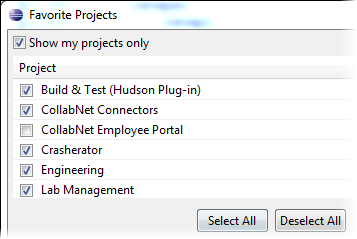

By specifying your favorite projects, you can have only those projects displayed in
the CollabNet Sites tree.
-
Specify your favorite projects.
-
In the CollabNet Sites
view, right-click a site and select
Favorite Projects.

-
Select your favorite projects from the list.
By default, only the projects in which you're a member are displayed.
To see a list of all projects on the site, de-select the Show
my projects only option.
-
Click OK.
-
To see only your favorite projects in the CollabNet Sites
view, right-click the site and select .
Your other options are to see all projects in the site, or the ones in which
you are a member.